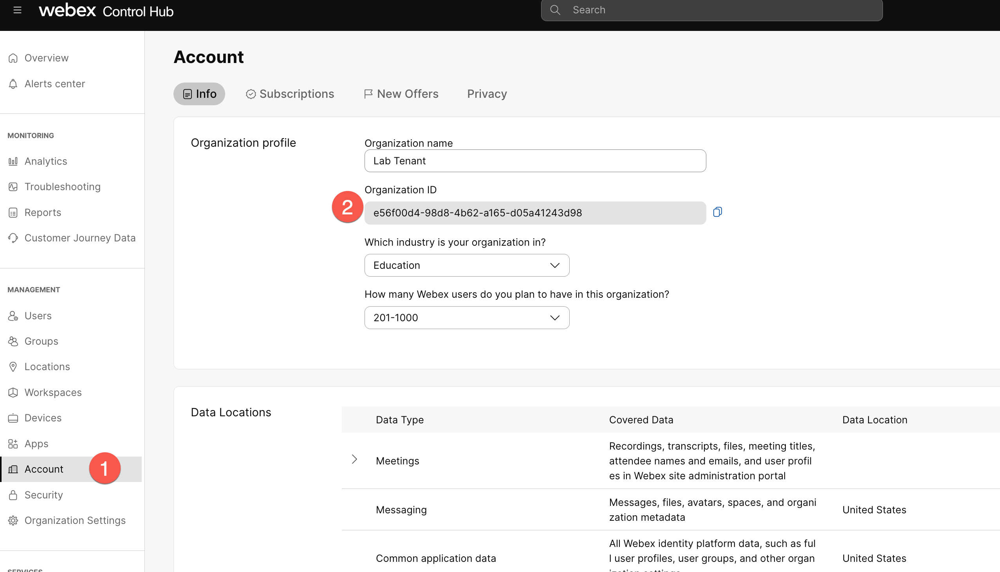
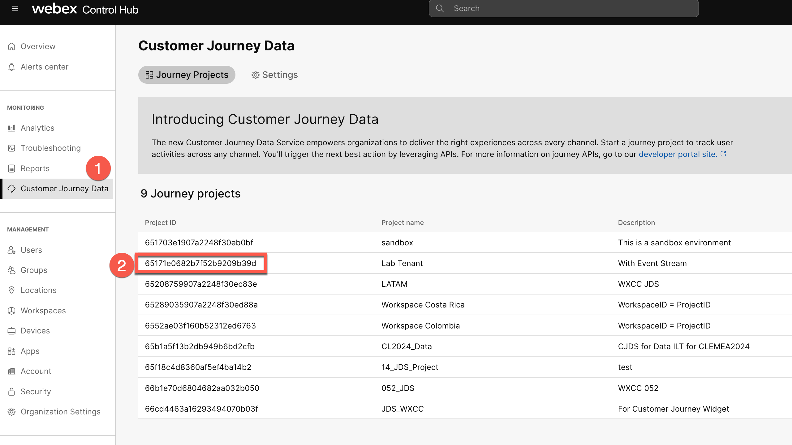

Lab 8 Customer Journey
Customer Journey Data Services (JDS)
Lab Objective This lab is designed to teach you the concepts and functionalities of Customer Journey Data Services (JDS), both in regard to the JDS Widget that can be added in Agent Deskpulltop as well as the API capabilities of the solution, since JDS remains an API-first solution today. You will learn how to use the JDS widget, how to add new customers (identities) to your JDS database as well as how to use the JDS APIs to extract information and act upon it.
Please submit the form below with your Attendee ID in 3 digits long format (e.g. if your attendee ID is 51, please enter 051) and click Save. All configuration items in the lab guide will be renamed with that prefix.
8.1: Exploring JDSs APIs & Widget JDS Desktop Widget provides agents with an interface that shows the end customer’s complete journey with the agent’s business, aggregated metrics of their experience as well as the customer’s unique identifiers (aliases).
{kind=link}
- Identity / Person: A unique customer, all the events that the same customer (e.g. call, chat, email, visit website) creates are marked under the same identity.
- Alias: Different ways we can identify the same customer/person (e.g. email, phone number, Customer ID). Customer must have at least one alias.
- Profile Template: A profile template defines the kind of aggregation technique we want to see for a customer (e.g. contacts within last 24 hours).
- Progressive Profile: The values that correspond to an identity’s profile template at that particular moment of time (e.g. contacts within last 24 hours = 10).
8.1 Adding a new identity
Note 1: For this task, you must have an admin account with the "Full admin" permissions.\ Note 2: To save time, we will be skipping the below exercise. Please read it and go to the next task.
-
Add a new identity for yourself to JDS project. Navigate to Control Hub with your administrator credentials.
-
Navigate to Customer Journey Data under Monitoring.
-
A project (named Lab Tenant) has already been created for the purposes of this lab. Click on it to check its configuration.
-
Click on the Identities tab. Identities are all the end-customer profiles created to be tracked by this specific JDS project.
-
Click on Add Identities button. In the UI you can only add identities by uploading a CSV file. To check the expected format of the CSV, click on Download to download the sample template.
-
Open the file. You see the expected format is the following:
Id,First Name,Last Name,Email Addresses,Phone Numbers,Customer Ids -
Enter a row with your details keeping in mind the following: • Id field should be left empty. • If you want to add multiple email addresses, phone numbers or customer IDs, you need to use the pipe “|” delimiter between them. For example, try to add your phone number both with and without a plus sign. • Customer ID is a unique ID given by the JDS administrator to each customer. Make sure to use a large number to avoid conflicts with existing customer IDs.
-
Based on the above, your new line should look similar to this:
-
Save the file and go back in Control Hub, click on Choose a file and select the file you created. Click on Next. If all is good, you will see the Import Status as Completed. In case of errors, you will get the message Completed with Errors and the option to download the error file to understand what you need to fix.
-
Click on Close button. You should now be able to see your created identity in the list.
8.2 Update Desktop layout & Login to dekstop
README
To optimize our time in this lab, we will utilize a pre-configured desktop layout that includes the modifications related to the journey widget. If you are interested in adding the CJDS widget to your existing desktop layout, you can find the code snippet and instructions here.
-
Download this desktop layout: Layout with Journey Widget pre-configured
-
Open/Edit the layout in a text editor. For test purposes, let's add the same widget to the Navigation panel as a page. This will help us to test the widget even when an agent is not on a call. For this find the navigation area in your Layout and add that code
{ "nav": { "label": "JDS System Widget", "icon": "https://static.thenounproject.com/png/508797-200.png", "iconType": "other", "navigateTo": "CustomNav6", "align": "top" }, "page": { "id": "customNav6", "widgets": { "right": { "comp": "customer-journey-widget", "script": "https://journey-widget.webex.com", "attributes": { "show-alias-icon": "true", "condensed-view": "true" }, "properties": { "interactionData": "$STORE.agentContact.taskSelected", "bearerToken": "$STORE.auth.accessToken", "organizationId": "$STORE.agent.orgId", "dataCenter": "$STORE.app.datacenter" }, "wrapper": { "title": "Customer Journey Widget", "maximizeAreaName": "app-maximize-area" } } }, "layout": { "areas": [["right"]], "size": { "cols": [1], "rows": [1] } } } }, -
Go to Control Hub -> Contact Center -> Desktop Layouts and Create a new Desktop Layout.
-
Set the name of the desktop layout as "
AttendeeID _Layout" (example: 140_Layout). Click on Replace file and upload the file that was downloaded and edited in the previous step. Select your respective team (Select the team "AttendeeID _Team"), and click Create.
{kind=link}
{kind=link}
{kind=link}
{kind=link}
Note: To log in to the agent desktop, use either a different web browser or a new incognito web page. This will prevent the browser caching issues with admin and agent credentials. Depending on your tenant's location the agent ULR link can be different. The example below is for the tenant in the US datacenter.
-
Navigate to https://desktop.wxcc-us1.cisco.com/ in the chrome browser with the incognito mode.
-
Enter the agent’s email ID which you created in the previous task.
-
Enter the Password for the appropriate username.
-
In the Station Credentials pane, select "Desktop".
-
Select the team
Your_Attendee_ID _Team1. -
Click Submit button. The browser may ask you to confirm use the microphone from the browser.
-
Make sure that you are successfully logged in to the Agent Desktop.
-
Go to the 3rd icon in the navigation panel and type gasathiy@cisco.com in the Lookup User field
8.3 [Bonus] Exploring JDS APIs
README
Please note that this section assumes a beginner-level understanding of APIs and familiarity with the Postman application. If you're not comfortable with these, don’t worry! The following steps will guide you through creating a custom application in Webex and using the APIs, allowing you to complete the lab by following the instructions. If you wish to learn more about the basics of Webex Contact Center APIs and how to use them, please refer to the linked content here, which includes videos and step-by-step instructions.
High Level Steps in this section:
A. Create a webex application, capture the clientId and ClientSecret
B. Access JDS API postman collection
C. Create new events
8.3.A Create a webex application, capture the clientId and ClientSecret
This task shows you the configuration steps to create a Webex application. This covers how to build the authentication part of the application for use with Postman.
1.Logon to https://developer.webex-cx.com with your Webex Contact Center username and password. On the top-right hand corner, hover over your userID and select My Webex Apps from the pop-out menu.

2.Provide the below details and create the application.
a. Integration Name: "AttendeeID_WebexApp" (example: **140_WebexApp**)
b. Description: Description_of_your_choice
c. Redirect URI: https://oauth.pstmn.io/v1/callback
d. Scopes: Check - cjp:config, cjp:config_write, cjp:config_read
{kind=link}
3.You will get the response with the Client ID, Client Secret, and the URL that you could embed in your application to initiate the authentication.
{kind=link}
4.Save Client ID and Secret ID into a text file. We will use it later.
Caution: Caution: Do not share or publish your production Client ID and Secret ID, as they can be exploited by malicious individuals to compromise your system.
5.Copy the whole URL into a new browser window and you see that redirect you to a Webex authentication page.

6.On the authentication window, click Accept.

7.You see that your application is now authenticated.

More Information about creating a Webex application and using Postman in this document: https://www.cisco.com/c/en/us/support/docs/contact-center/webex-contact-center/218418-configure-webex-contact-center-apis-with.html
8.3.B Access JDS API postman collection
As JDS is an API-first solution, there is a very wide range of APIs available. To make the introduction to them easier, Cisco has created a JDS API Collection that you can download and import in your API tool (e.g. Postman) and start playing around, in conjunction with various use cases.
1.Download the JDS Postman collection, by going to the GitHub samples page
2.Click on Download raw file
3.Open the Postman app on your laptop and click on Import button.
4.Select the downloaded JSON file in the appeared window
5.Once the JDS collection is imported, select the root folder of the imported collection in the left menu, then navigate to the Variables, and define the values
Note: reuse the same values as it was in the API lab (client ID, client Secret and org ID). The workspaceId is your project ID which is 65171e0682b7f52b9209b39d
Fetching OrgID 
{kind=link}
Fetching WorkspaceID 
{kind=link}
6.Once the values are defined, click Save button
{kind=link}
7.Go to Authorization and click on Get New Access Token button. The Postman will redirect you to the Auth page where you need to define your Admin account which was used for the App creation in the dev portal. As a result, you should get the message Authentication complete. Click Proceed and on the next page click on Use Token button

8.3.C Create new events
1.Let’s try to create a new event via API. Let's start with the default-generated events such as email and chat.
2.In the Postman, navigate to the Create email default events for journey-default-template
3.Change identity and "origin" to "gasathiy@cisco.com". Your API body should look like the below.
{
"specversion": "1.0",
"type": "task:new",
"source": "wxcc",
"id": "{{$guid}}",
"identity": "gasathiy@cisco.com",
"identitytype": "email",
"datacontenttype": "application/json",
"data": {
"taskId": "{{$guid}}",
"origin": "gasathiy@cisco.com",
"channelType": "email"
}
}
4.Click on Send button and verify the response status. It should be 202 Accepted
{kind=link}
5.Now do the same step 3 with chat by clicking on Create chat default events for journey-default-template
{kind=link}
6.Go back to the JDS widget in the Agent Desktop and verify the result. You can refresh the page if the events have not appeared. Now you should see new events in the right panel
Note: We can create any kind of Event and add it to the customer’s journey (e.g. customer visited our webpage).
Additional Content: This video shows you how to use various API's to manage JDS profiles and templates.